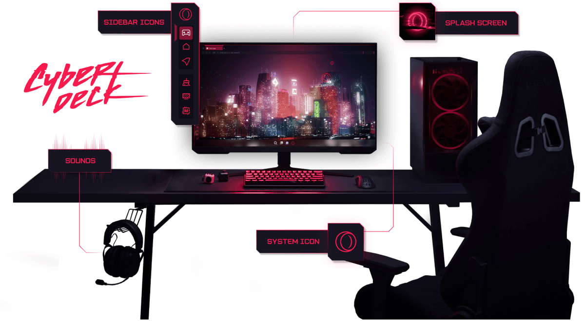

OPERA GX GAMING BROWSER
YOUR GAMING SETUP
DESERVES A
GAMING BROWSER
Control resources, keep your gaming tools close, and make the browser match your setup.
GX ControlRAM • CPU • Network
Discord & TwitchBuilt-in
GX ModsThemes • Sounds • Wallpapers

Opera GXSearch the web
GGX Control
RAM Limit8 GB
CPU Limit50%
Network Limit1 MB/s
GGX ModsThemes • Sounds • Wallpapers